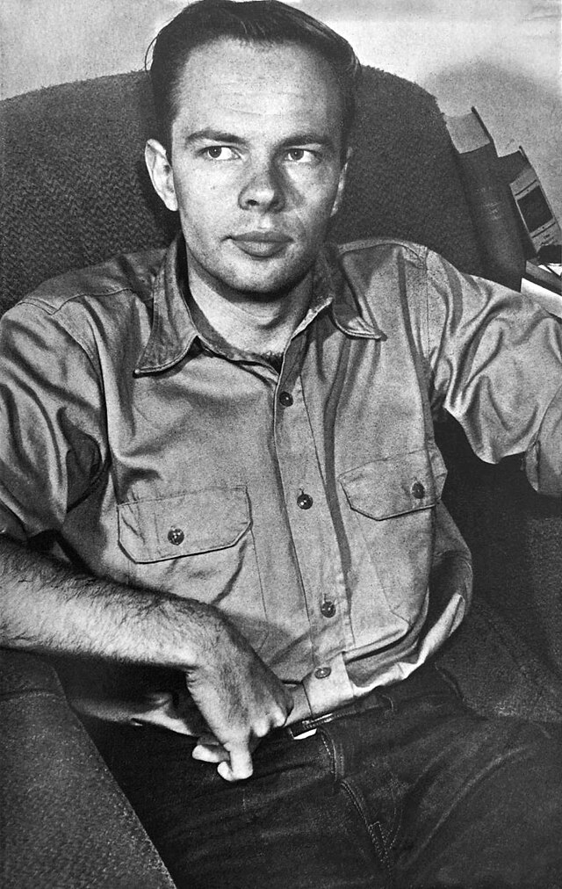

Philip K. Dick
Philip K. Dick (1928-1982) fue un escritor estadounidense, conocido principalmente por sus obras de ciencia ficción. Su estilo se caracteriza por explorar temas como la realidad, la percepción, la identidad y la paranoia. Sus novelas suelen mezclar lo psicológico con lo filosófico, a menudo cuestionando lo que es real y lo que no lo es.
Entre sus obras más destacadas se encuentran ¿Sueñan los androides con ovejas eléctricas? (1968), que inspiró la película Blade Runner, Los jugadores de Titan (1962), que imagina un mundo alternativo en el que las Potencias del Eje ganaron la Segunda Guerra Mundial, y Ubik (1969), una obra en la que se exploran conceptos como la vida después de la muerte.